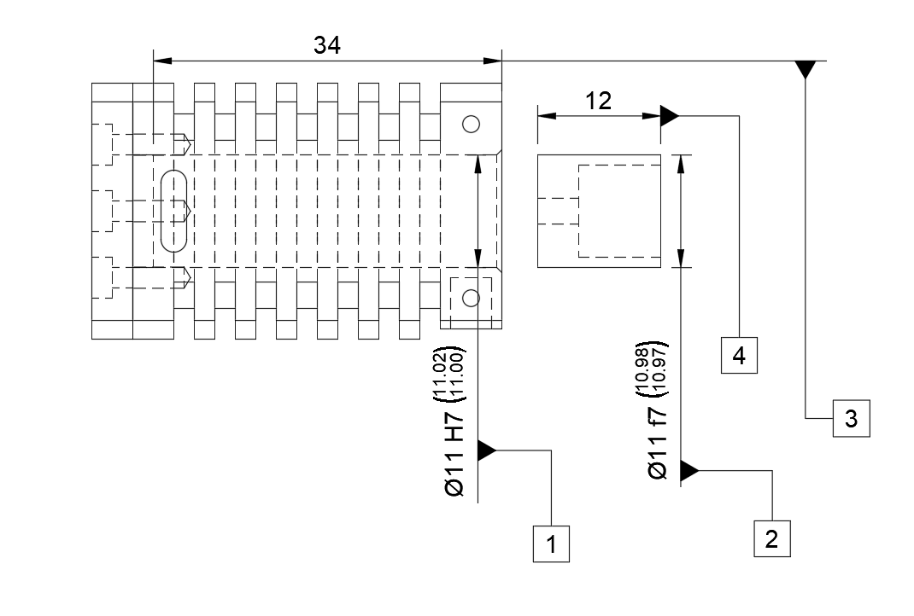

Datum_Metrology_Service
FAI Målerapport
Cylinder & Stempel // ISO 286-1
REPORT_ID: FAI-01-FLAME
Dato: 18.03.2026
EmneFlame Eater MK2
MaterialeEN-GJL-250 / AISI 304
Audit● Verificeret_OK
// CTQ Reference

| # | Karakteristik | Nominel | Tolerance | Målt | Status |
|---|---|---|---|---|---|
| 01 | Cylinder Boring Indv. Mikrometer |
Ø 11.000 | H7 (+0.018/0.000) | 11.005 | Pass |
| 02 | Stempel Diameter Udv. Mikrometer |
Ø 11.000 | f7 (-0.016/-0.034) | 10.980 | Pass |
| - | Beregnet Spillerum | - | 0.016 - 0.052 | 0.025 | Valid |
// Operatør Notat
Akklimatiseret v. 20°C. Spillerum på 0.025 mm sikrer vakuumtæthed uden mekanisk friktion.